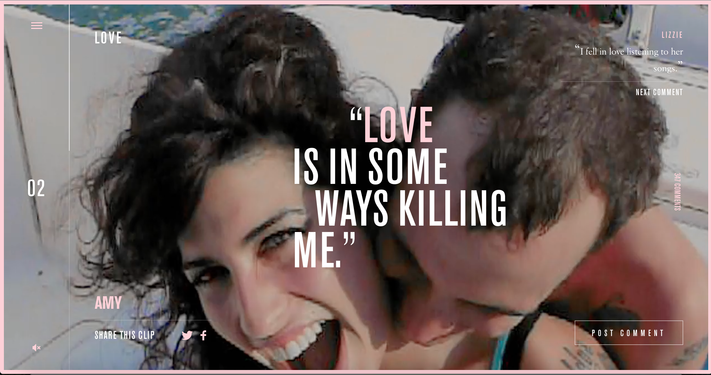

The website is made for the Amy Winehouse documentary. The text and links have nice effects and so most of the transititons and links are made to be ineteractive and animated in some way. Once you enter the page a video fades in along with the links and symbols folding in neatly. As you scroll down or up the videos change along to certain themes within the movie of love, talent, triumph, etc. There is also text that overlaps the video creating this air of sentimentality with her music looming in the background. Not only do you get her perspective but her fans with peoples comments changing in the corner. This website was made for Amy and to speak her truth and so it is really grounded in who she is and its made to trace her life like a timeline with the scroll instigating that action. I really like this website in how the designer brought so many elements together neatly, it couldve been messy and way too dense but everything is arranged so neatly and precisely that you dont feel overwhelmed at all.

- 